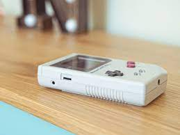

Revive la nostalgia de los clásicos.
Los videojuegos de 8-16 bits son juegos clásicos que se desarrollaron en las décadas de 1980 y 1990 para consolas como la NES, Sega Genesis y Super Nintendo. Estos juegos se caracterizan por sus gráficos pixelados y su jugabilidad adictiva.
¡Descubre o redescubre tus juegos favoritos de la era de los 8-16 bits! Explora nuestra colección y juega en línea de forma gratuita.
